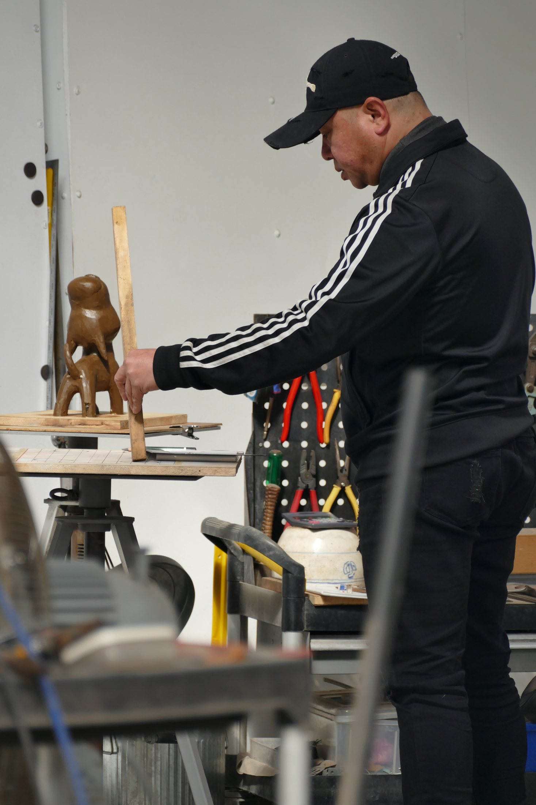

Poren Huang Sculpture Solo Exhibition
Millennium Hotel Taichung · 1F Lobby
CONTEMPORARY SCULPTURE
擁抱自信、喜悅與正向能量。毫不保留地成為自己，釋放嶄新的前進力量。
ARTIST

 view more...
view more...WORKS
WORKS
view more...
NEWS
Millennium Hotel Taichung · 1F Lobby
Taipei World Trade Center Exhibition Hall 1
Taichung International Convention and Exhibition Center · Rich Art Gallery
Taipei World Trade Center Exhibition Hall 1
PRESS
